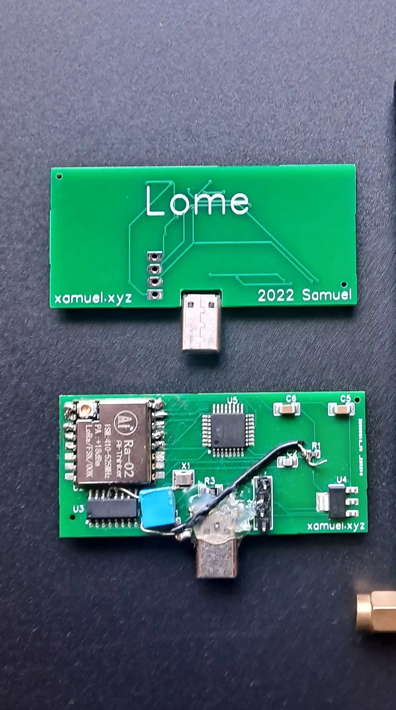
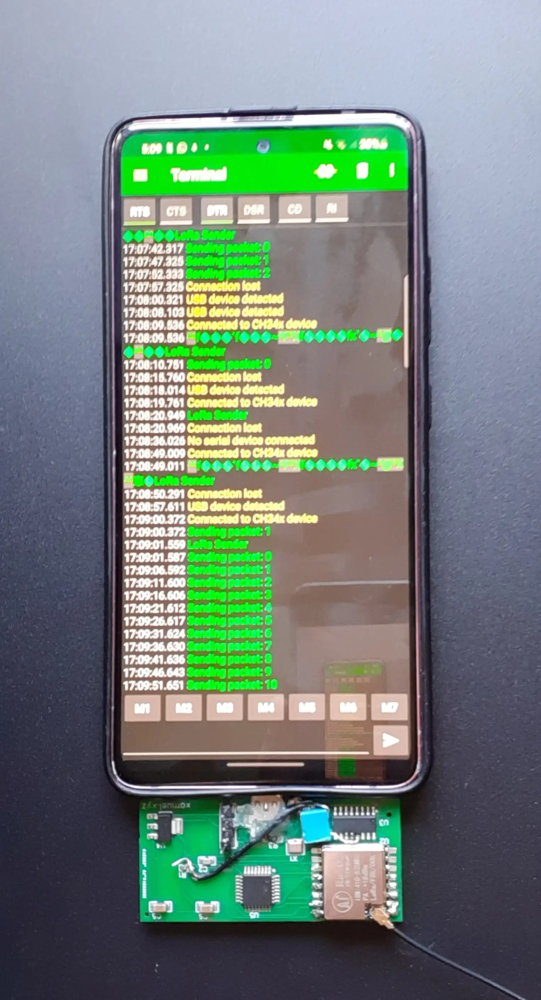

Lome
> Lome is a device that can be plugged into your phone with USB-C based around the atmega-8a and the Ra-02 LoRa module.
> It can receive and transmit Lora packages and can be programmed with the Arduino IDE.
> It could be useful in a situation where there is no service (hiking, disaster), to communicate with your peers or friends

